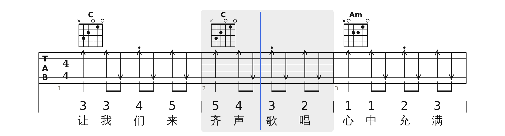
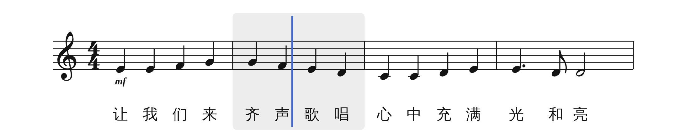
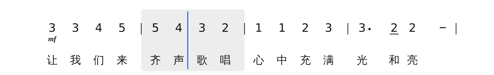
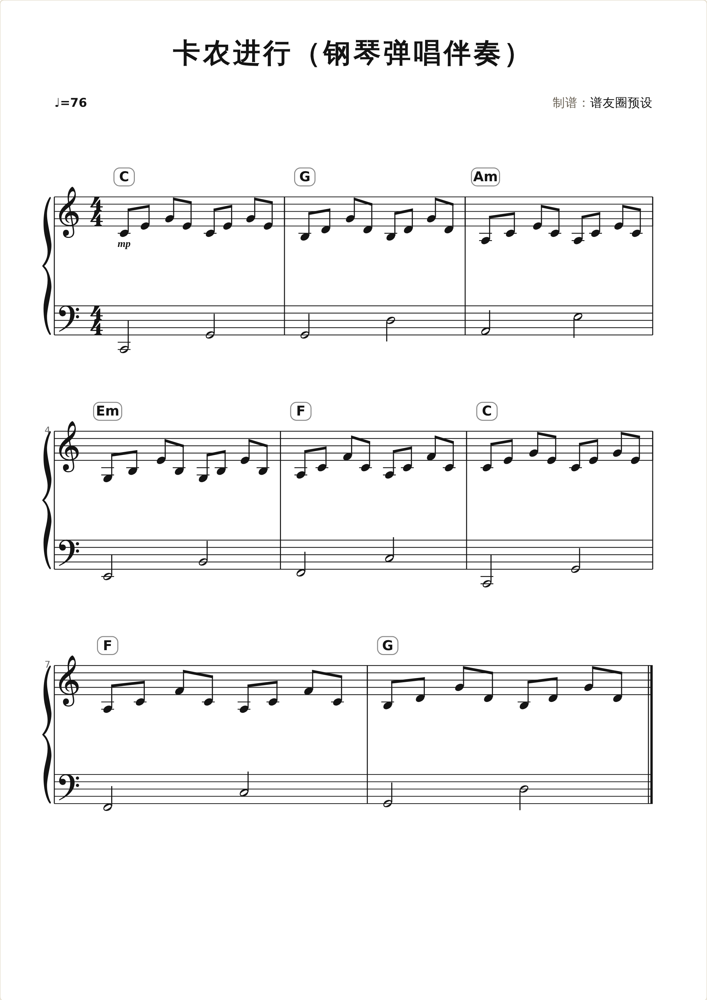
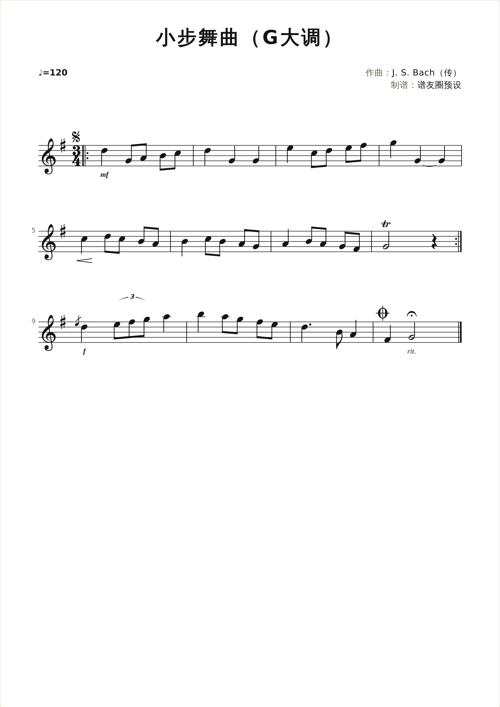
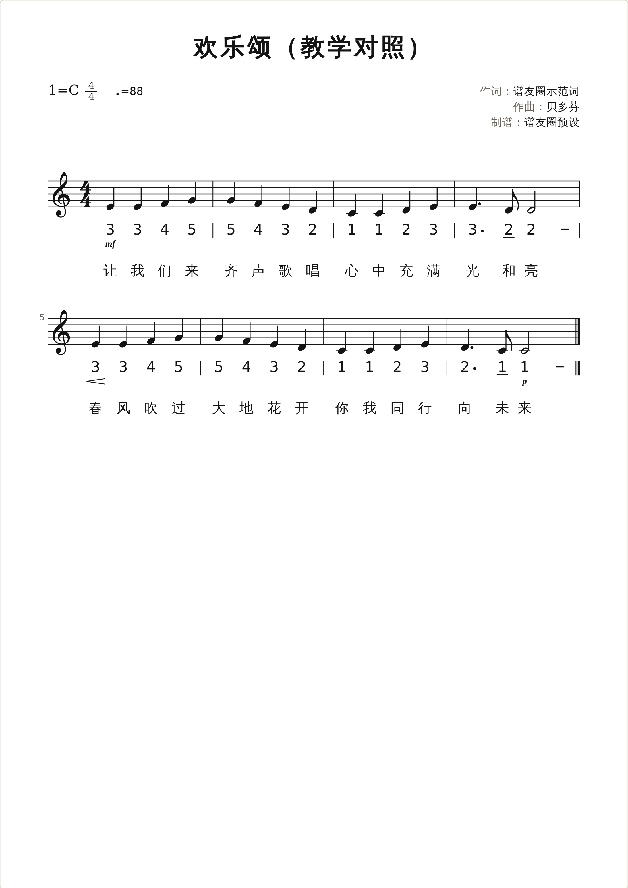
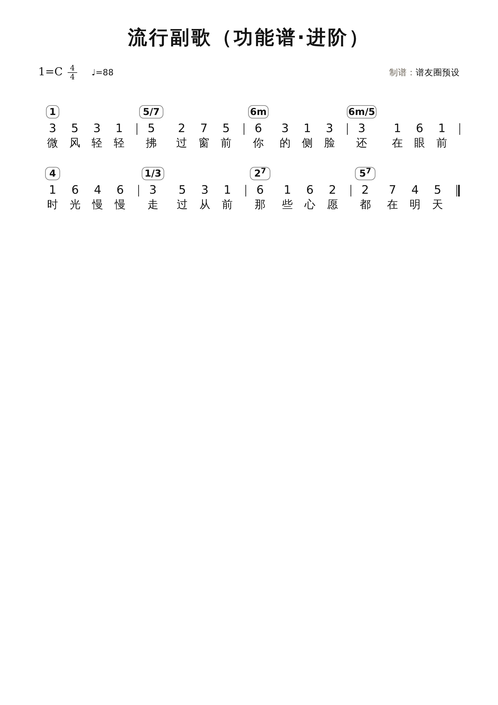
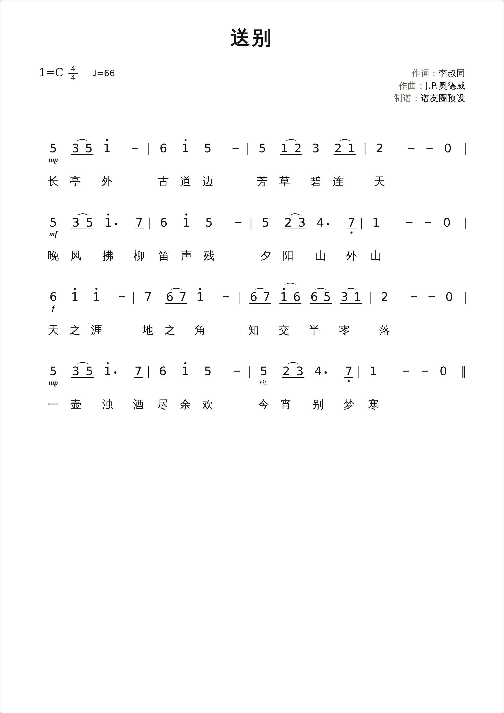
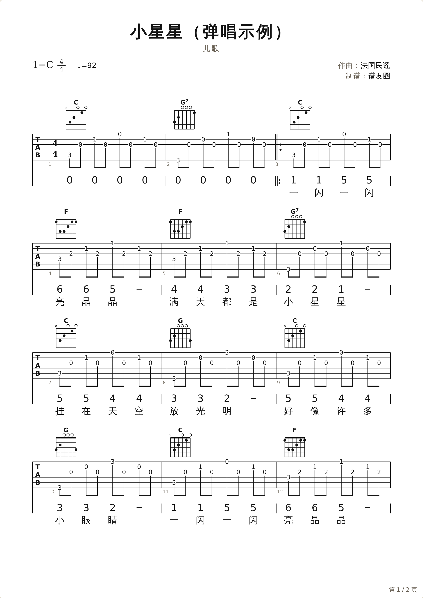

出版级 · 科教级制谱
谱友圈专业曲谱平台
把一条旋律写成考场能用的谱：简谱、五线谱、六线谱同一份数据一键互切，出版级刻版、智能配伴奏。给考编、艺考、师范的老师和学生，也给每一位弹唱的人。
全部弹唱钢琴弹唱歌谱教学对照功能谱收藏
打开浏览器就能用 · 免注册 · 本地实时保存
三谱同源
写一遍，三种谱同时就绪
简谱录入、五线谱交作业、六线谱给吉他手——它们是同一份数据的三种视图。改一个音，三处同步，移调不用重抄。
- 一键互切简谱 · 五线谱 · 六线谱，教学对照谱逐列对齐
- 出版级刻版符干、符杠、间距按《Behind Bars》与国标简谱惯例
- 互通MusicXML / MIDI 进出无损，MuseScore、Sibelius 直接打开
播放到第 2 小节，三张谱同步走
六线谱 · 弹唱

五线谱

简谱 · 1=C

为这些课堂和考场而做
全部 8 种谱类
教师考编
一段旋律，自动配好伴奏
即兴伴奏、弹唱与说课谱。21 套考试标准织体，生成的是可改的真音符。
进入考编工作台
音乐艺考
视唱、视奏与伴奏谱，一站出
视唱练耳谱例、器乐视奏五线谱、声乐考试伴奏谱，一份数据三种出法。
看艺考用法
师范生
弹唱伴奏与课堂谱，轻松做
儿歌弹唱、见习课堂范谱、五线谱＋简谱＋歌词的教学对照讲义。
做一份课堂谱
即兴伴奏
旋律进，双手伴奏谱出
自动配和弦，选织体生成可编辑的钢琴伴奏；级数与音名一键互切。
试一条旋律最新上架
全部曲谱目录
送别
欢乐颂（教学对照）
